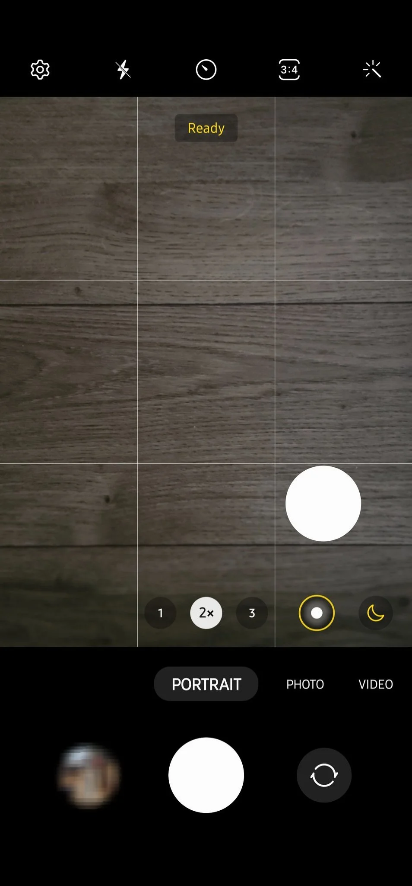

La gran actualización de junio para los Galaxy S23, lleva las camaras a OTRO NIVEL
La familia Galaxy S23 ha sido un gran éxito en el mercado, con el Samsung Galaxy S23 Ultra como gran exponente. Un teléfono al que no le falta de nada y que, encima, muy pronto contará con una nueva funcionalidad en la cámara que mejorará todavía más su ya de por sí completo apartado fotográfico.
De esta manera, si tienes un Samsung Galaxy S23 Ultra, que sepas que el modo retrato va a recibir una actualización que te permitirá hacer zoom 2X. O esto es lo que se desprende del descubrimiendo de Ice Universe, un peso pesado a la hora de filtrar todo tipo de información de Samsung, y que ha publicado un mensaje en Twitter donde deja muy poco imaginación.

Para ello, Samsung usará el zoom del sensor para obtener recortes de 50 MP del sensor ISOCELL HP2 de 200 MP, consiguiendo este modo retrato con zoom 2x. Todo a través de una imagen de 50 megapxíeles creada a través de capturas de 12 MP mediante el sistema pixel binning que usan los sensores de Samsung para conseguir obtener más luz.
Una mejora notable y que permitirá que hagamos zoom en el modo retrato para tomar capturas más directas. Además, esto no es solo una excelente noticia para los propietarios de un teléfono Samsung Galaxy S23 Ultra, sino para todos los clientes de la compañía, que están viendo como se puede vitaminar todavía más determinados apartados fotográficos mediante actualizaciones de software.
Fuente (S):
- as.com